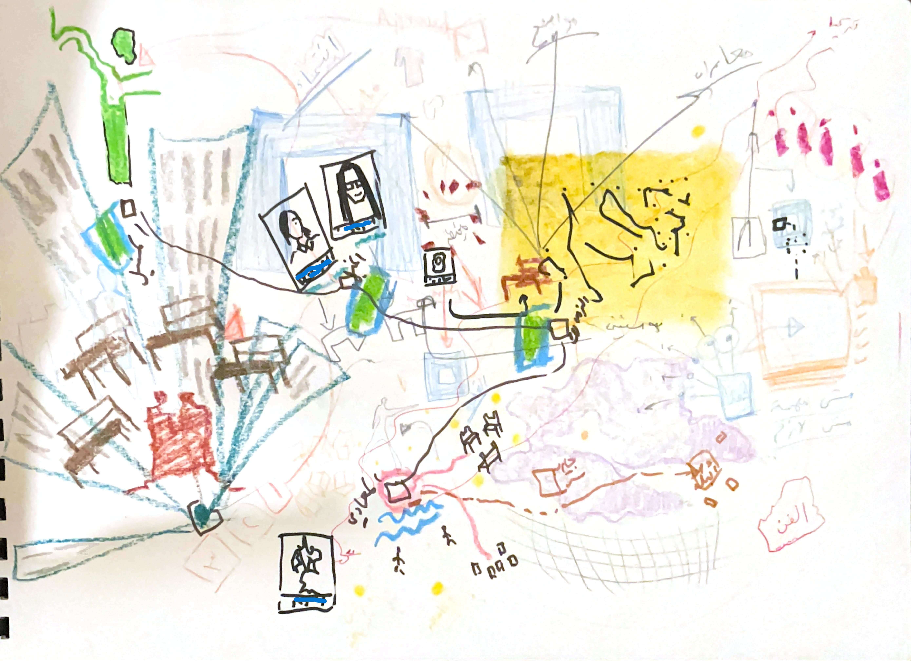
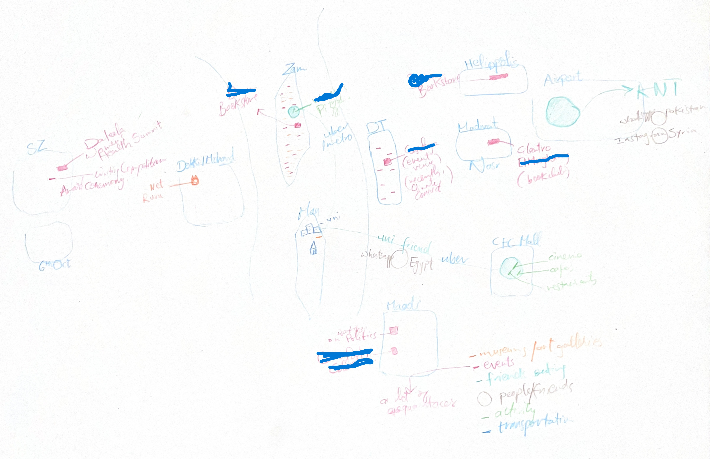
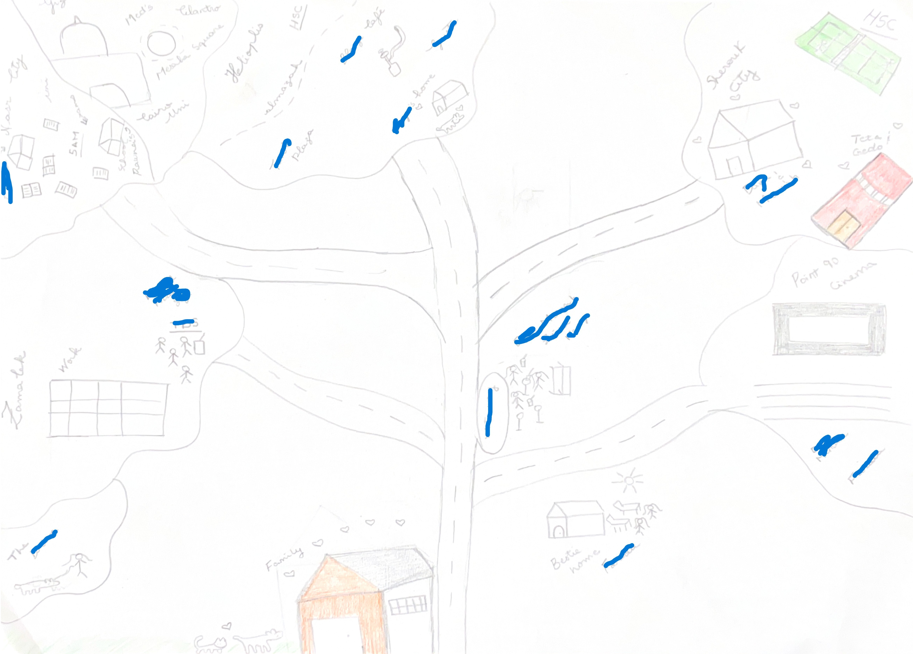
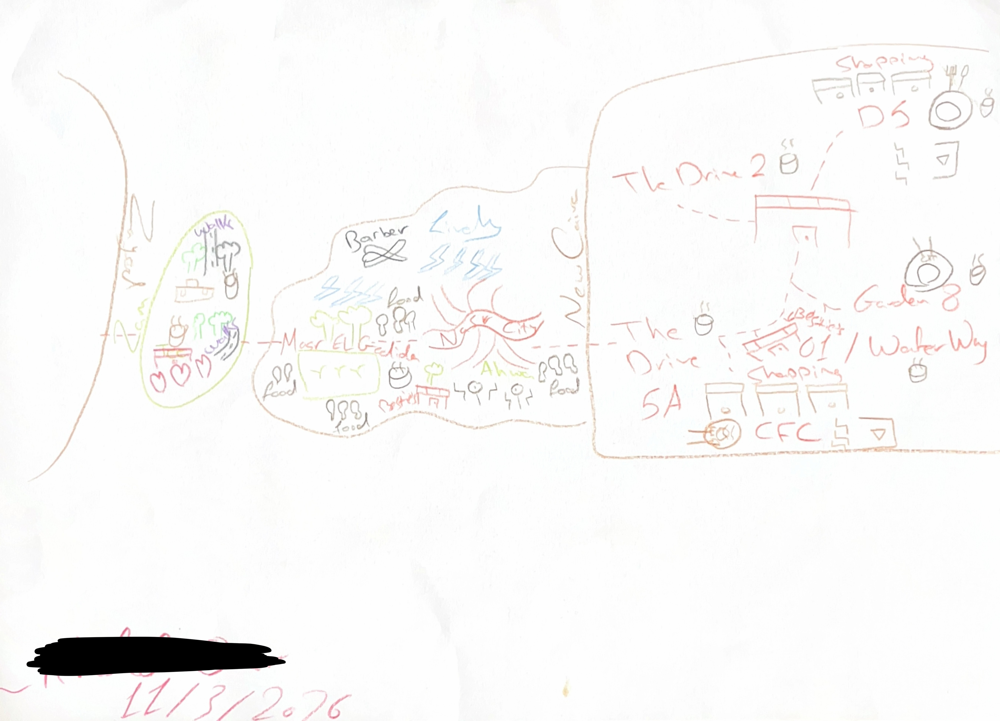
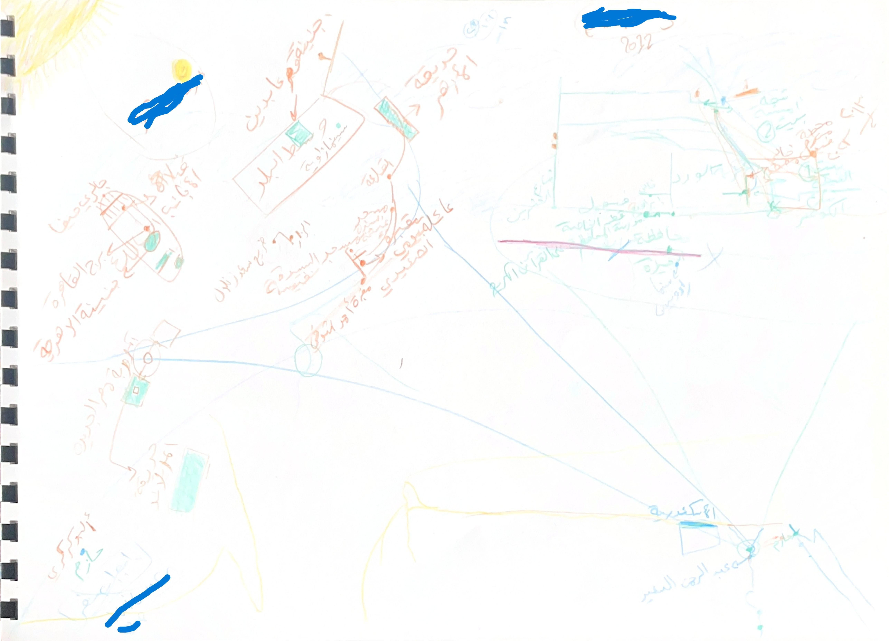

Abstract
Abstract: This article advances a methodological and conceptual argument for studying friendship as a central dimension of urban everyday life. Drawing on eight months of ethnographic fieldwork in Cairo, it combines friendship as method—embedding research within the rhythms, ethics, and reciprocity of lived relationships—with mental mapping as a visual and narrative tool. Together, these approaches reconceptualise the field not as a bounded site but as a relational and processual formation that unfolds across multiple, shifting spaces. Building on this methodological ground, the article introduces landscapes of friendship: an analytical concept capturing the configuration of relations, places, and practices through which a person's friendships are lived and sustained, holding together their social, spatial, and affective dimensions rather than treating them as separable. The article argues that friendship’s informal, mobile, and non-institutionalised nature demands methods that move with it, foregrounding temporality, co-presence, and trust as conditions of knowledge production, and offers landscapes of friendship as a framework for studying a diffuse social relationship in large, unequal cities.
Keywords
Introduction
Anthropology has a long tradition of attending to the textures of everyday life—to routine, practice, and the ordinary rhythms of social existence. Friendship is among the most ordinary and pervasive forms of social life, but has rarely been treated as a primary object of anthropological inquiry. Where it appears, it tends to function as backdrop: the medium through which fieldwork happens, or a topic that surfaces in passing, rather than an object of study, a relationship that structures how everyday life is lived, organised, and experienced. The lack of research attention to friendship has been acknowledged in anthropological literature (Bell and Coleman, 1999; Desai and Killick, 2010), yet the topic continues to be studied in only limited and fragmented ways. The majority of anthropological work on friendship focuses on rural settings and socio-economic transformation, leaving urban friendship and its spatial, economic, and political context largely unexamined. This gap is especially pronounced in South West Asia and North Africa, where themes such as sociability, leisure, and social life have been explored (Schielke, 2008; Deeb and Harb, 2013; Bonnefoi, 2022), but friendship as a relationship in its own right has seldom been placed at the centre of analysis, let alone examined in dialogue with the city and the built environment. Calls for engagement with friendship in diverse urban settings (Kathiravelu, 2013) point to the need to examine how such relationships are shaped by the socio-spatial features of urban life and best understood within specific time-space contexts that capture their dynamics within dense environments.
Greater Cairo, with an estimated population of 22 million, has seen significant growth in both formal and informal settlements. The limited public space available has increasingly become a commodity, suffering from fortification, privatisation and commercialisation due to governmental planning policies (Bakir and Attia, 2021). Many leisure opportunities have come to be located in private clubs, malls, resorts and gated compounds, particularly in the newer urban peripheries of Greater Cairo (Abaza, 2006; Hutchison, 2010). In this urban context, I ask: how do youth navigate and negotiate their urban environment to carve out spaces of friendship? I turn to the everyday practices and performances through which friendships are formed, maintained, and spatially enacted. I approach friendship not as a secondary or incidental relation, but as a key site through which everyday life in the city is produced, negotiated and experienced. I explore the relationships youth cultivate both with one another and with the city, approaching urban space as an active participant in shaping social life.
This article is based on eight months of ethnographic fieldwork in Cairo, combining friendship as method, formal and informal interviews, and mental mapping sessions with fifteen participants/friends.
Landscapes of Friendship
A crucial methodological question follows: how does one study friendship? As a largely non-institutionalised and informal relationship, friendship is fluid, mobile, and highly malleable. Its conceptualisations, understandings, and lived experiences vary across contexts and individuals. At the same time, friendships are practised within a set of spatial constraints and social boundaries. To capture this, I introduce the concept of landscape of friendship: the configuration of relations, places, and practices through which one person's friendships are lived and sustained. What holds a landscape together is not structural ties among its parts—friends do not need to know each other, or belong to the same social world, to be part of one landscape—but their shared connection to the person whose landscape it is. This distinguishes the concept from an approach centred on social networks or friendship groups. A landscape of friendship is shaped by a person's social position and by the material conditions through which their relations unfold. As a friend, you fit into the landscapes of friendship of other people and as a person you have your own landscape of friendship in which your friends evolve. I argue that everyday life in large, unequal cities cannot be adequately understood through bounded sites or clearly defined communities. Instead, studying friendship requires a relational and processual approach that moves with social life as it unfolds across multiple spaces and scales. Analytically, a landscape of friendship refuses to treat friendship's social, material, affective, spatial, temporal, and digital dimensions as separable, revealing how messily, unevenly and asymmetrically these dimensions combine in any one life. In a city as stratified as Cairo, this shift in unit of analysis reveals that a landscape of friendship is never only personal: it is also infrastructural, bearing the imprint of mobility, income, and access to the city itself. Reaching landscapes of friendship in this sense requires two different kinds of knowing in combination. Mapping makes visible the spatial dimensions of friendship landscapes by tracing the places and movements through which relationships endure, are revisited, or fade. But a landscape of friendship is not made of shape alone. It is also made of the social and affective dynamics of relationships as they are actually lived, felt and enacted. This kind of knowledge becomes available through a different route entirely: the researcher's own sustained position within the landscape under study.
The choice of landscape as an organising concept is not incidental. As a metaphor, it draws on an inherently visual register: the Western concept of landscape originates in painting and representation (Roger, 1997). Hirsch (1995) distinguishes between a landscape apprehended by an outside observer and one produced through local practice and made visible through ethnographic engagement. Landscapes, in this second sense, are lived, experienced, and inhabited formations. In his influential account of globalisation, Appadurai (1996) uses the suffix "-scape" precisely because global cultural flows are deeply perspectival, taking different shapes depending on who navigates them. As such, landscape allows the different layers of friendship, its paradoxes and messiness, to be held together within a single concept; but it also implies a single vantage point from which that shape can be surveyed.
Methodologically, this approach combines friendship as method and mental mapping, each attending to different dimensions of friendship landscapes. Together, these approaches make it possible to co-produce and access the otherwise dispersed and often taken-for-granted landscapes of friendship that structure everyday life.
Friendship as Method in the Field
What is the field, both geographically and anthropologically, when tracking a relationship that could be everywhere and anywhere? Traditional understandings of ethnographic fieldwork often presuppose a fieldsite that can be walked across “comfortably in a day’s work” (Falzon, 2009, p. 6). Yet as ethnographers increasingly engage with spaces that are neither villages, small islands, nor neatly bounded urban neighbourhoods, this conception becomes problematic. Falzon concludes that when an entire city is the site, conventional spatial demarcation “cannot be done; the consequence seems to be that such a spatial shift necessitates at least a reformulation of conventional methodology” (Falzon, 2009, p. 6).
Drawing on urban anthropology and multi-sited ethnography (Marcus, 1995; Falzon, 2009), I conceptualise the city itself as a heterogeneous field of overlapping social worlds that become perceptible only through their practical enactment (Maeder and Nadai, 2009). My participants share a demographic and spatial location, that of young adults living in Cairo, but they do not form a cohesive group, scene, or community with a unified identity. No single neighbourhood or venue was chosen as the fieldsite; instead, a methodological device structures the research: “friendship as method”. The urban field is mapped not according to institutional or conceptual boundaries but through the everyday relational trajectories and shared practices that emerge within friendships. In this sense, friendship becomes the analytic and methodological lens through which the city is rendered as field.
Friendship as method was developed by Tillmann out of her ethnographic research on gay-straight friendships in Tampa, Florida, as a research approach grounded in “the practices, the pace, the contexts, and the ethics of friendship” (Tillmann, 2015, p. 291). In practice, this means research and friendship involve “being in the world with others” (Tillmann, 2015, p. 289). With some participants, I typically meet in a group at a café in the evening; with others, our encounters take the form of one-to-one walks or coffee outings. Some friendships are anchored in weekly routines at the gym or in a yoga studio, while others are more spontaneous. Some have befriended my husband as well and met up without me, others have only heard about him. Some relations unfold primarily in domestic spaces and others have never seen my house, nor I theirs, at all. It is through everyday practices that landscapes of friendship are produced and inhabited. Friendship as method thus allows me to trace the landscapes that young Cairenes actively produce, moving between neighbourhoods, crossing social boundaries, and weaving together the multiple worlds that constitute their everyday lives. This approach is also responsive to the nature of Cairo itself: a fragmented, unequal, and sprawling metropolis where spatial access is stratified, mobility is uneven, and social life rarely coheres within one bounded place. The more-than-human forces, city’s infrastructures, material affordances and rhythms, shape the possibilities and constraints of friendship, which influence when, where, and how relationships unfold.
The temporal dimension of the method matters too. Friendship as method unfolds at a natural, often slow tempo. Both friendship and anthropological fieldwork require what Bondi (2013, p. 10) calls the capacity to “enable ‘nothing to happen’ or ‘time to be wasted.’” Throughout fieldwork, it was not always possible to meet with friends and participants as frequently as I hoped. Their lives are shaped by work schedules, studies, family obligations, and social commitments to which I am not always connected. As a result, much of the research took place in evenings or on weekends, with daytime meetings occurring only when someone happened to have a day off, a long lunch break, or an unexpectedly cancelled class. My weeknights filled quickly, and I often felt I was “not doing enough”. Seasonal rhythms, such as Ramadan, also altered the frequency, timing, and character of our interactions. If I had not seen certain participants for a week or two, I interpreted this absence as a failure of my research. Over time, I came to recognise that these irregularities were not disruptions to the research but manifestations of the natural temporalities of friendship itself. They are ethnographic data in their own right, revealing how friendship is positioned within temporal structures of work, responsibilities, family and rest. Friendship as method foregrounds processuality and longitudinality, allowing relationships and ethnographic inquiry to evolve together. As Tillmann (2015, p. 294) puts it, “the unfolding path of the relationships becomes the path of the project.”
The diversity of my participants means the field does not cohere around one shared community but is instead constituted through multiple, intersecting social worlds. They live in different neighbourhoods, occupy varying class positions, span different ages, nationalities, genders and sexualities, and participate in distinct social scenes. Moreover, individual participants themselves move across multiple friendship networks, each associated with different spaces, activities, and histories. Importantly, accompanying friends across these varied spaces does not imply unlimited access to their lives. I follow the rhythms of natural friendship and maintain a respectful distance from settings not natural to our friendship, such as workplaces, private obligations, or homes where a visit would feel intrusive. With one participant, I never visited her Cairo apartment, yet visited her family home three hours away multiple times, because those were the spaces our friendship was naturally led to.
Perhaps most central is the ethic underpinning the method. Friendship as method is “neither a program nor a guise aimed at gaining further access,” but a form of investment in participants’ lives that places the relationship “on par with the project” (Tillmann, 2015, p. 294). This investment circulates in both directions. My friends ask how the research is progressing, offer advice, and engage in conversations about the project. On one occasion, while I was at a dinner gathering across town for research, a friend phoned to say they happened to be nearby and asked whether I needed a ride home; they had remembered where I was and anticipated the difficulty of returning late at night by public transport. Such gestures illuminate how relational responsibilities become integral to the research encounter itself.
In practice, this means my participants are also my friends across the ordinary channels through which friendship is lived: I am a part of the group chats, the drama and gossip, tagged in stories, present at birthdays, graduations, housewarmings, art exhibitions, game nights: the accumulation of small, unremarkable occasions through which a friendship is sustained. It is also what makes a different kind of knowledge available: not better access, but the felt, rather than only observed, texture of a relationship. This is a distinction between observing friendship and knowing through friendship, and it is necessarily partial and non-generalisable: I am part of the landscapes of friendship I am tracing, in a way that cannot be extended to the participants with whom my fieldwork remains observational, participants I get along with, whose dynamics I could describe, but whose landscape I am not part of, nor they of mine.
Friendship as method demands “radical reciprocity,” shifting the frame from studying “them” to studying “us” (Tillmann, 2015, p. 294). In practice, this reciprocity takes forms that sit uneasily with conventional research ethics. Friendship involves a kind of informal knowledge-sharing that is difficult to separate from the research encounter: discussing a mutual friend's situation with another participant, comparing perspectives on the same person or event, or being drawn into gossip. These are constitutive features of how friendship functions. As a friend I participate in them naturally; as a researcher I carry an awareness that this information shapes not only my analysis but also how I navigate relationships in the field: deciding what to share, what to withhold, who to protect and from what, and how to do so without being paternalistic about it. Being as ethical as possible, in practice, rarely looks like following a clear principle. This dynamic is further complicated by the fact that participants from the same social circles sometimes actively offer me information about others—people, situations, relationships—deeming it relevant to my research, often without the knowledge of those concerned. And because I move across overlapping friend groups, I frequently find myself in possession of multiple perspectives on the same event or person, which requires a kind of careful performance: acting surprised, or unknowing, in order to protect the trust of everyone involved. This tension is not resolved so much as embraced, and it demands a more honest reckoning with how knowledge about others is produced and circulates, both in friendships and in research.
As such, the method is not without risk. Beyond its romantic potential, Sassi and Thomas (2012) warn that friendship may obscure rather than resolve the inherent power imbalances of research. The intensity of the existing friendship, the kind of research being conducted, and the importance of the friendship relative to the research relationship all shape these dynamics (Owton and Allen-Collinson, 2014). These dynamics manifest as conflicting obligations between care for a friend and responsibilities to the research, the vulnerability of being known as well as knowing, and the risk that participants may feel misrepresented by how they appear in the final work. Ellis (2007) documents this vividly in her account of friends and participants who were upset by how she had described them—a reminder that the closeness that makes the method productive also raises the stakes of what is done with what it produces.
Friendship as method is attuned to the dynamics and chaos of everyday life but this kind of access cannot be extended to everyone encountered in the field, nor is it meant to replace the participant observation and interviewing that make up most of my broader project; it is possible only with the small number of participants with whom such a relationship existed or developed, and is best understood as a complementary, layered mode of access rather than a superior one.
Mental Mapping
Mental maps are representative maps of spaces derived from cognitive maps, making them processual, representational, and never complete (Gieseking, 2013). The technique generates two-dimensional representations of spaces and their relational configurations as experienced by actors (Lucas-Drogan and Genz, 2018). People construct such maps by linking generalised senses of place to emotional and social connections (Gao, Cranshaw and Thebault-Spieker, 2024). Mental maps remain theoretical constructs; they cannot be observed directly but only become accessible “when reified through behavioural, oral, textual, or graphical acts” (Götz and Holmén, 2018, p. 158). Rather than simple reflections of cognition, they constitute socially constructed texts through which desires, emotions, and internal contradictions are expressed (Jung, 2014), and are shaped by political, social, cultural, and economic factors (Smiley, 2013). They visualise experiences of place ranging from the minutiae of everyday life to broader macro structural forces (Catney, Frost and Vaughn, 2019), and constitute an interdisciplinary approach to understanding socio-spatial dynamics (Dragan, Crețan and Triponescu, 2025). Mental mapping is not the only technique available for rendering space and social life visible; other participatory and spatial mapping approaches have been used productively to study everyday life, typically taking a site, a territory, or a collective's claim to space as their primary object. Because a landscape of friendship is defined at the level of the individual, mental mapping's orientation toward a single actor's subjective, relational geography made it the more fitting technique: it asks what shape a particular person's friendships take, and through what places and practices they are sustained.
A critique of multi-sited “following” is that it risks naturalising space— assuming a pre-existing field that the ethnographer simply traces—rather than recognising space as socially produced (Falzon, 2009). The landscapes of friendship that constitute the field are not pre-existing containers. They are co-produced through the ongoing interactions between me and my participants. Mental mapping makes this co-production tangible: mapping is an act of creating and imagining space (Wood, Fels and Krygier, 2010), and asking participants to draw their social geographies constructs, rather than merely records, the spatial configuration of their landscape of friendship. The mental maps are therefore not neutral representations of a fixed spatial reality but generative moments in which it is actively constituted and rendered visible.
Mental mapping emerged as a particularly productive tool for rendering visible the spatial and relational configuration of a landscape of friendship. Unlike structured interviews, mapping created an organic entry point into conversations that are otherwise difficult to access. I asked participants to draw “their social life in the city with their friends,” no other instructions were given. A week later, we met again and I asked them to explain what they had drawn. Participants treated the map as a storytelling device, articulating connections, comparisons, and memories. The form these maps took varied considerably depending on the participant's own relationship to visual expression. One participant produced a map that was very emotionally rendered, expressive in its use of colour and line, geography present but subordinate to feeling. Another, by contrast, produced something closer to a conventional map, complete with a legend, oriented and scaled with evident care.


The exercise lowered the threshold for analytical reflection: participants themselves began drawing connections, offering interpretations and constructing coherent narratives of social lives. The three cases that follow draw on both the maps and the relationships through which they were produced, reading friendship landscapes through their spatial configurations as well as their lived enactment.
Ghada
Ghada and I met through Amira, a close friend of mine, as her boyfriend is Ghada’s coworker and introduced us. Soon after, regular group outings followed: nights at a local café, celebrating birthdays, doing escape rooms, watching football and going for dinners. This group consisted mainly of Ghada, Amira and her boyfriend, me and my husband. However, Amira and her boyfriend would see Ghada much more often than me: their core group of friends consists mainly of their colleagues, some of whom I have met through time. They see each other daily at work and often hang out. My own friendship with Ghada, then, is sustained almost entirely at an outer layer: group settings, occasional WhatsApp conversations, a developing, or perhaps looser, friendship.
On one occasion, I was repeatedly trying to arrange a meeting with Ghada, but she did not respond to my messages. Assuming she was simply busy, I sent several follow-up messages. A few days later, I learned through Amira that Ghada's grandfather had passed away which explained her silence. Amira and other friends had attended his azza, a gathering after the funeral for condolences, to which it is customary, even expected, for friends to attend in support, regardless of whether they knew the deceased. I was a bit surprised that none of our mutual friends had informed me and embarrassed that, unaware of the circumstances, I had continued messaging her about meeting up. Later, I expressed my condolences and Ghada apologised for her silence, explaining that she had been overwhelmed. The incident prompted reflection on the uneven expectations and obligations that structure friendship. The incident revealed a dimension of Ghada's landscape of friendship that was not immediately apparent to me. While I occupied one part of her relational world, the circulation of information, expectations of support, and obligations surrounding the funeral followed different relational pathways. The episode highlighted that friendship landscapes are not only composed of shared spaces and experiences, but also of uneven responsibilities, expectations, and forms of care that position different friends differently within a person's social life.
For the mapping exercise, we met during her lunch break, and after settling with our coffees I took her drawing from my bag and asked her to talk me through what she had drawn. She began with her house, placed prominently in the bottom centre of the page: not only her daily point of departure, but also a significant site of social life. Her friends frequently visit or stay over, especially her two cousins. She also considers her sister and parents as friends, emphasising that they spend a great deal of time together. Her narrative thus departed from her home and followed the roads extending from it into different neighbourhoods.

She noted that she "did not expect it to look like this," remarking that the layout was far more spatially organised than she had anticipated. She explained that she would never consciously think of particular friends or friend groups as being tied to specific neighbourhoods, but that seeing them plotted visually made her realise how clearly differentiated these spatial clusters were—adding immediately that she does not experience her friendships in this segmented way.
This led into a discussion about mobility. Ghada mostly uses her car, or used to have a driver before obtaining her licence. This reminded her that the car itself is an important site of sociability: she now commutes almost daily with Amira’s boyfriend, her colleague turned close friend, and during university she commuted with her best friend from their shared neighbourhood. Her surprise extended beyond spatial arrangement to specific elements she had chosen to include. At one point she paused and asked, “Why did I draw this café? I literally never go there anymore,” before explaining its past significance during her university years.
Ghada’s map also contained people, not only places. She commented on the number of homes represented: her own, those of friends, and those of family members. She reflected that, had I simply asked where friendships take place, she would likely have mentioned cafés, restaurants, and other public venues: “I would not have mentioned houses,” she said, “even though they are very important.” This importance of domestic places also means something for our own friendship. Although we had known one another for some time, neither of us had visited the other's home, nor had we attempted to arrange such a visit. Instead, our relationship unfolded primarily in cafés and other commercial venues. The exercise therefore not only revealed aspects of Ghada's wider landscape of friendship, but also situated our own friendship within it.
The map functioned as a temporal as well as spatial narrative, illuminating socio-spatial changes over life stages (Gieseking, 2013). Ghada pointed out how certain neighbourhoods and spaces were meaningful only during particular phases of her life— childhood friends connected to a school and a sporting club she rarely visits now; different clusters for her university years and her current work life. Different friendships and routines accumulated across life stages, leaving traces even after they had receded from her everyday world. This shows that landscapes are not static configurations. Equally telling were the absences from the map. She had not included any of the places or friends associated with her exchange year in Paris, explaining that she did not know she was “allowed” to draw them since they were geographically elsewhere. These friendships, formed with a small group of Egyptian exchange students who lived together and grew close during their time abroad, nonetheless remain part of her daily life through digital communication. This opened a conversation about how relationships can be spatially distant yet socially and emotionally proximate, and about the limits of the map itself: we discussed how it might, in principle, include an additional layer linking virtual interactions to physical geography. The point extends beyond this particular map. Landscapes of friendship are not reducible to physical geography. They emerge through the entanglement of technologies, places, mobilities, and everyday practice. Friendship increasingly unfolds in digital space: it mediates contact with friends who are nearby but momentarily inaccessible, manages the logistics of meeting, and in cases like Ghada's Paris friendships, becomes the primary terrain on which distant friendships are sustained. Digital communication makes this possible, not merely by bridging space, but by participating in the maintenance of intimacy, the circulation of memories, and the rhythms of everyday interaction.
Much of what Ghada discussed was not entirely unfamiliar to me. I had met several of the people appearing on the map, heard stories about others, and was already acquainted with certain dynamics, tensions, and relationships that structured her social life. I possessed a textured understanding of Ghada as a friend: the conflicts we had discussed, the changing dynamics within friendship groups, the jokes and memories that accumulated through our relationship, and the friendships she maintained with colleagues. This knowledge was affective, relational, and embodied, emerging not only from what Ghada told me but also from my own position within some of the social worlds she inhabited. At the same time, the map directed our conversation beyond the parts of her landscape of friendship to which I already had access. It prompted discussions about relationships that were largely unfamiliar to me. The point is not that friendship as method grants privileged access to Ghada's social world. Rather, it offers a particular vantage point from within a landscape of friendship.
Karim
Karim’s map revealed a different orientation. Instead of naming individuals, he included only one person explicitly “bestie”, and focused instead on spaces, atmospheres, and the density of social life. His map took the shape of a road: a linear but richly textured representation of movement and intensity. He marked certain neighbourhoods with lightning bolts to denote places he considered “fun” and “lively,” in contrast to the more matter-of-fact areas around his home, which he left unembellished. The far right of the map named a neighbourhood but left it completely empty, as if the city ran out there.

Karim's visual differentiation of atmospheres opened a conversation I often try to initiate in conventional interviews about the "vibe" of places, but that rarely gains traction. In this context, such reflections appeared intuitive and self-evident, though they were not entirely new to me. Over the course of our friendship, his landscape emerged through repeated choices and refusals: which neighbourhoods came up when arranging meet-ups, what he commented on as we drove past, what he steered us toward or away from without quite explaining why. I had already learned which parts of the city Karim considered lively, authentic, or worth spending time in, and which simply fell out of consideration. What I came to realise, gradually, was that these were not only evaluations of space: they were part of an ongoing curation of people, of who Karim wanted around him, and who he did not. Sitting in a restaurant in Zamalek one evening, he remarked that the place felt "too old" for us, not a comment on the décor, but on who else was there. During car rides, similar judgements surfaced in passing: a neighbourhood dismissed as artificial, another praised as properly local, and yet another as too local for us. Beneath these spatial judgements lay a steadier work of sorting friendships and social worlds, who belonged in which register of his life, and where that could plausibly take place. Once, Karim asked my husband to come and watch a football match with him and friends in Nasr City. When my husband mentioned that I wanted to see the match too, Karim suggested the informal café was not appropriate for me. Karim and my husband discussed alternatives, debating where the group should go instead. Eventually I went to watch elsewhere with some girlfriends in a more upscale café and the men went with their initial plan. On his map, Karim identified two spaces as central to his social life: his barber and the informal street café in question which he frequents with a group of about twenty friends. The mental map created an opening to discuss both places without requiring physical co-presence. He told me about the people he meets there, the conversations they usually have and some funny memories attached to the place. This led to a discussion about neighbourhood norms, masculinity, and gendered spatial boundaries, topics that can easily feel strained when raised directly.
The map also made Karim reflect on certain neighbourhoods that were absent. He explained he visits them occasionally but “not every month,” and therefore did not feel they belonged on the page. These omissions are analytically significant: they delineate the boundaries of what he considers socially salient, rather than indicating a lack of knowledge of the city. As Smiley (2013) notes, mental maps rarely reflect the full spatial repertoire available to individuals. Rather, they represent “popular cartographies” (Moyer, 2004) that capture only those places a person deems relevant or meaningful. In other words, if an area is not significant to an individual, it will not appear on the map, even if they pass through it regularly. Omitted areas that are often passed through are not excluded due to a lack of knowledge of their existence but rather due to the fact that they are not considered a part of their lived social world (Smiley, 2013). Such selectivity underscores the dual role of mental maps: people map the areas they know best and value most, and simultaneously make decisions about where they go based on these maps (albeit in their non-materialised cognitive form). This interplay between spatial practice and spatial representation reflects what Soja (2011) terms the socio-spatial dialectic: the mutually constitutive relationship between society and space.
Omar
I met Omar in an old neighbourhood café in Faysal. It was our first time there, but he wanted to check it out. He lives in Faysal, a neighbourhood in the southwest of the city. His map is dense and reflects an intimate familiarity with his immediate surroundings: streets drawn in detail, houses and people marked with care, layers added each time he remembered something. There is something almost tender about the level of detail you only accumulate when a place is truly your daily territory. A texture neither Ghada's nor Karim's maps share, as they move fluidly beyond the home neighbourhood.

And yet, when looking at where Omar actually goes for leisure and to meet friends, the map tells a different story. Those places are not in Faysal. They are on the other side of the Nile: Downtown, Zamalek, Abdeen, Al-Azhar Park. Lectures, parks, workshops, book clubs, literary events. His neighbourhood, drawn with such precision and affection, is essentially a place where he spends most of his time at home or at a relative’s. The map thus holds two Cairos simultaneously: the one he knows intimately and the one he actually wants to inhabit. This is also visible through our relationship. Visiting Omar means travelling to parts of Cairo I would otherwise have little reason to visit. Faysal rarely appears as a destination in my own social life, yet through our friendship it is a place I travel to, not because of what the neighbourhood itself offers, but because of the person living there. Friendship thus acts as a mobility infrastructure of its own, reorganising my movement through the city and making visible parts of Cairo that would otherwise remain outside my everyday trajectories.
Omar gets around on the metro, and this too is legible in the map, though the metro line itself is not drawn. It functions as a tunnel: you go underground somewhere and reappear above ground at your destination. The metro, relatively affordable and mostly reliable, organises his movement but it also marks a threshold. To meet friends, attend a lecture, do anything he considers worthwhile, Omar must first leave Faysal. The friction of that journey is financial as well as physical: travel costs add up, and being a young man who loves culture and intellectual exchange but has limited income means constantly calculating whether he can afford to show up. Omar is openly critical of cultural events that charge significant entry fees and laments the lack of spaces for sociability in his own neighbourhood.
Notable too is what is absent from his map: no cafés, no specific restaurants, no informal street cafés. He mentioned that the street cafés in his neighbourhood are not really his thing, as he is not into football. I find myself thinking about other participants among them Karim, mostly those living in New Cairo or Sheikh Zayed, who speak wistfully about “local” neighbourhoods precisely for their street cafés, their sense of community, their street-level sociability. But the street café as a symbol of organic urban life and sociability looks different when it does not feel like a space that is yours to occupy. Omar’s identity and interests do not map neatly onto the social scripts of that particular public space, making it a site of exclusion as much as belonging.
A significant part of Omar’s social life therefore takes place at home and online. Not simply as a generational preference for screens, but as a spatial and economic adaptation. When physical sociability is costly and geographically distant, digital space becomes the space you can actually inhabit. WhatsApp groups, shared playlists, Instagram conversations, phone calls, watching philosophy videos and sending them to a friend with your thoughts. These are not substitutes for “real” friendship so much as the form friendship takes when the city does not make it easy. The same dynamic shapes our own relationship, a lot of our interactions take place online. Omar's landscape of friendship is shaped by the friction of urban infrastructure: aspirational and cross-city in its orientation, constrained by the economic and physical cost of mobility, and partly displaced into digital space as a result.
Interestingly, some important sites of sociability did not appear on Omar's map. One such example is the felucca, an affordable Nile boat ride that frequently functions as a space of gathering for several of my friendship groups. The ride takes anywhere from thirty minutes to two hours, during which people bring their own food and drinks, put on music, talk, dance, or simply take in the view. We took such a ride together with other friends. It is a bit different from other venues Omar discussed: relatively affordable, no regulated consumption, no management of who does what once aboard. Another friend once described it to me as a place of "in-betweenness," neither fully public nor private, holding a kind of potential other spaces do not.
Comparing landscapes: mobility, time, and digital space
The landscapes of friendship of Ghada, Karim and Omar offer a way of answering the question posed at the beginning of this article: how do youth navigate and negotiate their urban environment to carve out spaces of friendship? Here, three aspects stand out: how friendship is organised by mobility and infrastructure, how it is oriented in time, and what role digital space plays in sustaining it. Ghada and Karim's landscapes are characterised by car-based mobility, commercial leisure, and relatively frictionless access to a wide range of urban spaces. Omar's landscape inverts this: he spends much of his time at home and the physical spaces that matter to him are not easily accessible. The three landscapes are also oriented toward different tenses. Ghada's accumulates: friends from childhood, school, and university persist as long-term attachments she values precisely for their durability. Karim's is anchored almost entirely in the present, populated by friends who fit his current life phase. Omar is partly oriented toward the present, where circumstances are often more limited than he would like, but also partly aspirational, his landscape pulled toward the spaces and frequencies he wants rather than the ones immediately available to him. Digital space enters accordingly. For Ghada it anchors a friendship with no spatial footing left at all; for Karim, settled in physical presence, it barely registers; for Omar it is load-bearing, absorbing a social life that physical space makes too costly to sustain. Taken together, these three landscapes are less a set of findings than a demonstration of what the concept is for: a way of tracing friendship close to how it is actually lived, holding its spatial, temporal, digital, and affective dimensions together rather than apart.
Conclusion
Friendship is among the most ordinary features of everyday life and, perhaps for that reason, among the most methodologically elusive. It has no fixed site, no institutional form, no predictable schedule. To study it is to confront, immediately, the foundational questions of ethnographic research: what is the field, who constitutes it, and how does one follow a relationship that does not stay still? This article has argued that friendship must be studied as part of the chaos of everyday life, and that doing so requires methods that move with its relational and spatial unfolding. Friendship as method lets the relationships themselves constitute the field, rather than selecting a site and studying whoever inhabits it; mental mapping then makes those landscapes partially legible, surfacing spatial patterns, temporal shifts, and affective associations. Used together, the two methods co-produce the field rather than simply describing it. Beyond its methodological contribution, this article proposes landscapes of friendship as an analytical concept. The concept shifts attention to the broader constellations of people, places, routines and material and emotional conditions through which urban life is lived. Landscapes of friendship approach friendship on its own terms: as a fluid, non-institutional and affective relationship, shaped as much by social and material conditions as by the practices that sustain it.
References
Abaza, M. (2006) Changing consumer cultures of Modern Egypt: Cairo’s urban reshaping. Leiden: Brill (Social, economic and political studies of the Middle East and Asia, 101).
Appadurai, A. (1996) Modernity at large: cultural dimensions of globalization. Minneapolis, Minn: University of Minnesota Press (Public worlds, v. 1).
Bakir, R.A. and Attia, S.A. (2021) ‘Changing use of public spaces in Cairo during COVID-19’, Urban Research & Practice, 14(5), pp. 576–593. Available at: https://doi.org/10.1080/17535069.2021.2006897.
Bell, S. and Coleman, S. (eds) (1999) The anthropology of friendship. Oxford: Berg.
Bondi, L. (2013) ‘Research and Therapy: Generating Meaning and Feeling Gaps.’, Qualitative Inquiry, 19(1), pp. 9–19.
Bonnefoi, F. (2022) ‘Café turc ou cappuccino ? Pratiques de loisirs et distinction sociale dans les cafés cairotes’, EchoGéo [Preprint], (61). Available at: https://doi.org/10.4000/echogeo.23678.
Catney, G., Frost, D. and Vaughn, L. (2019) ‘Residents’ perspectives on defining neighbourhood: mental mapping as a tool for participatory neighbourhood research’, Qualitative Research, 19(6), pp. 735–752. Available at: https://doi.org/10.1177/1468794118803841.
Deeb, L. and Harb, M. (2013) Leisurely Islam: negotiating geography and morality in Shi’ite South Beirut. Princeton, New Jersey: Princeton University Press (Princeton studies in Muslim politics).
Desai, A. and Killick, E. (eds) (2010) The ways of friendship: anthropological perspectives. New York: Berghahn Books.
Dragan, A., Crețan, R. and Triponescu, A. (2025) ‘Mental maps, generational insights and symbols of urban spaces in a Romanian context’, GeoJournal, 90(2), p. 64. Available at: https://doi.org/10.1007/s10708-025-11308-6.
Ellis, C. (2007) ‘Telling Secrets, Revealing Lives: Relational Ethics in Research With Intimate Others’, Qualitative Inquiry, 13(1), pp. 3–29. Available at: https://doi.org/10.1177/1077800406294947.
Falzon, M.-A. (ed.) (2009) Multi-sited ethnography: theory, praxis and locality in contemporary research. London: Routledge. Available at: https://doi.org/10.4324/9781315596389.
Gao, Z., Cranshaw, J. and Thebault-Spieker, J. (2024) ‘Journeying Through Sense of Place with Mental Maps: Characterizing Changing Spatial Understanding and Sense of Place During Migration for Work’, Proceedings of the ACM on Human-Computer Interaction, 8(CSCW2), pp. 1–31. Available at: https://doi.org/10.1145/3687042.
Gieseking, J.J. (2013) ‘Where We Go From Here: The Mental Sketch Mapping Method and Its Analytic Components’, Qualitative Inquiry, 19(9), pp. 712–724. Available at: https://doi.org/10.1177/1077800413500926.
Götz, N. and Holmén, J. (2018) ‘Introduction to the theme issue: “Mental maps: geographical and historical perspectives”’, Journal of Cultural Geography, 35(2), pp. 157–161. Available at: https://doi.org/10.1080/08873631.2018.1426953.
Hirsch, E. (1995) ‘Landscape: Between Place and Space’, in E. Hirsch and M. O’Hanlon (eds) The anthropology of landscape: perspectives on place and space. Oxford: New York: Oxford University Press (Oxford studies in social and cultural anthropology), pp. 1–30.
Hutchison, R. (ed.) (2010) ‘Cairo, Egypt’, Encyclopedia of Urban Studies. SAGE. Available at: https://doi.org/10.4135/9781412971973.n37.
Jung, H. (2014) ‘Let Their Voices Be Seen: Exploring Mental Mapping as a Feminist Visual Methodology for the Study of Migrant Women’, International Journal of Urban and Regional Research, 38(3), pp. 985–1002. Available at: https://doi.org/10.1111/1468-2427.12004.
Kathiravelu, L. (2013) ‘Friendship and the urban encounter: Towards a research agenda’, MMG Working Paper, 13–10, pp. 1–19.
Lucas-Drogan, D. and Genz, C. (2018) ‘Decoding mapping as practice: an interdisciplinary approach in architecture and urban anthropology’, THE URBAN TRANSCRIPTS JOURNAL, 1(4).
Maeder, C. and Nadai, E. (2009) ‘Contours of the Field(s): Multi-sited Ethnography as a Theory-driven Research Strategy for Sociology’, in M.-A. Falzon (ed.) Multi-sited ethnography: theory, praxis and locality in contemporary research. London: Routledge, pp. 233–250. Available at: https://doi.org/10.4324/9781315596389.
Marcus, G.E. (1995) ‘Ethnography in/of the World System: The Emergence of Multi-Sited Ethnography’, Annual Review of Anthropology, 24(1), pp. 95–117. Available at: https://doi.org/10.1146/annurev.an.24.100195.000523.
Moyer, E. (2004) ‘Popular Cartographies: youthful imaginings of the global in the streets of Dar es Salaam, Tanzania’, City & Society, 16(2), pp. 117–143. Available at: https://doi.org/10.1525/city.2004.16.2.117.
Owton, H. and Allen-Collinson, J. (2014) ‘Close But Not Too Close: Friendship as Method(ology) in Ethnographic Research Encounters’, Journal of Contemporary Ethnography, 43(3), pp. 283–305. Available at: https://doi.org/10.1177/0891241613495410.
Roger, A. (1997) Court traité du paysage. Paris: Gallimard (Bibliothèque des sciences humaines).
Sassi, K. and Thomas, E.E. (2012) ‘“If You Weren’t Researching Me and a Friend . . . ”: The Mobius of Friendship and Mentorship as Methodological Approaches to Qualitative Research’, Qualitative Inquiry, 18(10), pp. 830–842. Available at: https://doi.org/10.1177/1077800412456958.
Schielke, S. (2008) ‘Boredom and despair in rural Egypt’, Contemporary Islam, 3(2), pp. 251–270. Available at: https://doi.org/10.1007/s11562-008-0065-8.
Smiley, S.L. (2013) ‘Mental maps, segregation, and everyday life in Dar es Salaam, Tanzania’, Journal of Cultural Geography, 30(2), pp. 215–244. Available at: https://doi.org/10.1080/08873631.2013.779151.
Soja, E.W. (2011) Postmodern geographies: the reassertion of space in critical social theory. London: Verso (Radical thinkers).
Tillmann, L. (2015) ‘Appendix: Friendship as Method’, In solidarity: friendship, family, and activism beyond gay and straight. New York: Routledge (Innovative ethnographies), pp. 287–319. Available at: https://doi.org/10.4324/9781315772332.
Wood, D., Fels, J. and Krygier, J. (2010) Rethinking the power of maps. New York: Guilford Press.
Author Bio
Noa Jacobs-Latreche is a Doctoral Candidate at Ghent University and a guest researcher at NVIC and CEDEJ in Cairo. She is interested in how friendship and everyday urban practices shape (non-)belonging in cities. Her work combines ethnographic and spatial methods to explore non-romantic intimacy, youth cultures and social life in Cairo.
Recommended Citation
Jacobs-Latreche, N. (2026) ‘Following Friends, Finding the Field: Method and the Landscapes of Friendship in Cairo’, Everyday Life: International Journal of Public Culture, Art and Design, 1(1), pp. 1–21.
Article URL: https://articles.everydaylifejournal.uk/articles/research-articles/following-friends-finding-the-field/
Copyright
© 2026 The Author(s). Published by Everyday Life: International Journal of Public Culture, Art and Design. This is an open-access article distributed under the terms of the Creative Commons Attribution-NonCommercial 4.0 International Licence (CC BY-NC 4.0), which permits non-commercial use, distribution and reproduction in any medium, provided the original work is properly cited. Everyday Life is an independent open-access journal with no submission or publication fees.